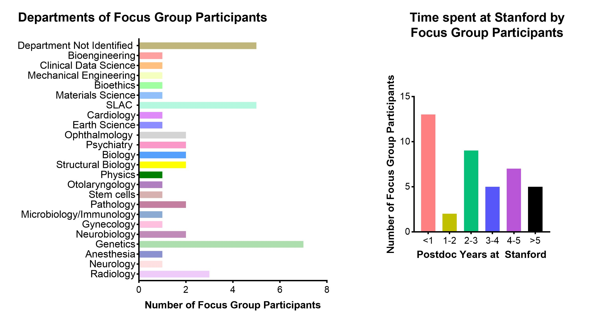
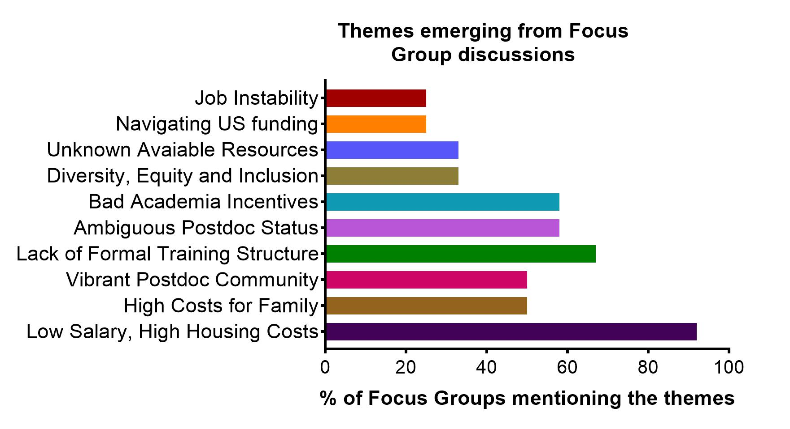

Postdoc Focus Groups 2021
Conversations with Postdocs at Stanford: Focus Groups 2021
Overview
We conducted in-depth, hour-long, open-ended conversations about the present and future of the postdoctoral experience with groups of between two and ten postdocs. Twelve different focus group sessions were held between March and December 2021 with a total of 50 participants. Due to the COVID-19 pandemic, all focus groups were conducted virtually via Zoom. As an expression of our appreciation for their time and energy, participants were offered reimbursement for lunch up to the value of $15 each. This cost was supported by SURPAS.
To ensure that postdocs from as many different identities as possible were included in our conversations, we hosted focus groups that were specifically advertised for historically minoritized groups, including the Stanford Black Postdoc Association, Stanford Latinx Postdoc Association, LGBTQIA+ Postdocs, Postdocs with Dependents, and Late-stage Postdocs. Postdocs with these identities were also welcome to join the focus groups that were advertised to the postdoc community at large.
All focus groups were conducted in the same open-ended manner according to the template provided in Appendix B: How to Run a Long Range Planning Focus Group. Focus group participants were initially presented with a broad question: “What should the postdoc experience at Stanford look like in 2030?” If necessary to stimulate further conversation, additional follow-up questions were posed. Questions were deliberately broad and open-ended in order to not bias the responses of the participants; we wanted participants to raise the issues that were already on their minds, rather than seek their response to previously identified issues. To this end, focus groups with historically minoritized groups were not directed to focus their comments on issues that might be specifically relevant to their group. Instead, the same broad questions were posed to these groups.
Detailed notes for each focus group were taken during the conversations by an assigned notetaker (a Committee member), who then wrote a summary of the main topics raised within that session. After all the focus groups had been completed, these summaries were compiled into a single document. The themes below were identified from that compilation document as frequently raised topics. These themes represent the topics that were most commonly raised by focus group participants. They do not represent an exhaustive account of everything that was discussed.
Focus group conversations were recorded via Zoom (following verbal consent from all participants) and these recordings were later transcribed to text by the Committee members. Quotations included below that address particular themes were selected from these transcripts.
Meta-Analysis of Focus Group Conversations
Our Focus Group participants spanned a wide range of departments (Figure 12, left panel) and length of time (Figure 1, right panel) as a postdoc at Stanford. Participants self-identified as being from the following departments at Stanford (Figure 1, left panel), and this was representative of the different schools and departments present at Stanford. The participants also spent varying amounts of time as a Postdoc at Stanford (Figure 1, right panel).

The percentage of Focus Group sessions in which each identified theme was mentioned were as follows:

The views presented in this section were from a diverse pool of Postdocs and the themes that were identified during the Focus Group sessions as shown in Figure 2 are summarized below.
1. Postdoc Salaries Are Insufficient For Extremely High Cost of Living
(N.B. The Focus Groups were conducted in 2021, prior to the intense inflation of 2022. As of December 2022, the postdoc minimum salary has not been raised commensurate with inflation. Therefore, postdocs’ purchasing power has decreased since the Focus Group conversations.)
Postdocs at Stanford struggle with the extremely high cost of living in the Bay Area. This was the challenge most consistently reported by Focus Group participants. Unprompted, it was raised in all but one of the groups. This suggests a high mental toll on the postdoc community due to this single issue.
Postdoc pay is viewed, almost universally, as low and insufficient for living in the areas around Stanford. Housing costs, as the single biggest expense for most households, are extremely high. One Focus Group participant reported requiring 75% of their postdoc income to cover just housing and dependent care expenses. Childcare, where it is accessible, is also extremely expensive (see the next section: “2. Postdoc Parents Face Very High Costs and Low Access to Childcare”). Moving to Stanford from abroad (>60% of Stanford’s postdocs are international) involves substantial additional expenses that Stanford does not assist with. Commuting is another substantial cost that occupies postdocs’ minds.
Participants questioned how many potential postdocs are choosing not to come to Stanford because of the very real affordability difficulties. Stanford is losing out on an unknown number of excellent candidates as a result. Another participant put it more frankly: “Doing a postdoc [here] is not accessible to people who need to work to earn a living.” Others cited financial stress as negatively impacting their research productivity. This should be particularly concerning to academic institutions and Principal Investigators who hire postdocs. Postdocs are very often the researchers who are responsible for driving key aspects of research and mentoring within the university setting.
Participants offered a range of potential actions that could help to address this situation. They suggested: Stanford should build more housing that could be provided to postdocs at a subsidy (and thereby be affordable); Stanford should provide more financial assistance in general; Stanford should raise the Minimum Postdoc Salary to be equivalent to that paid by industry; Stanford should have a short-term housing provision to assist incoming postdocs with their transition from elsewhere into local (non-Stanford) housing; Stanford should provide free meals for postdocs; postdoc salary, benefits, and support system should be boosted substantially.
“Postdocs should be making enough money to live in this area without having to worry or going into debt.”
“I think the cost of living in the Bay Area is outrageous, so compensation along those lines to the extent that we can live as adults would be a major component in making the postdoc better.”
“It’s already such a financial hit to take this salary, which actually is good here compared to most other places. It is still much lower than what all my former classmates are getting in industry, but they are also getting matched 401(k) [retirement savings]. That would be huge to have a few more years of compound interest retirement savings, would be really really big.”
“Just build more houses! Why are they not working more to have more housing for postdocs? To make sure their employees can stay on campus and work on-site to make less traffic in and out of the campus.”
2. Postdoc Parents Face Very High Costs and Low Access to Childcare
(N.B. The Focus Groups were conducted in 2021. Stanford’s Postdoctoral Scholar Family Grant program increased the maximum amount from $5000 to $10,000 in January 2022.)
Many postdocs feel that starting a family is incompatible with being a postdoc. In our Focus Group conversations, the primary difficulties cited were: the lack of access to childcare (limited places, long waitlists) and the extremely high cost of childcare (relative to postdoc salary). As a result of these lack of resources, some postdocs choose to forgo starting a family while they are a postdoc. This is a source of considerable concern and frustration for some postdocs.
One Focus Group participant stated that the only model for having children as a postdoc that is workable, although still not easy, is for the postdoc to have a partner who works in a much higher paid field (such as the tech industry) and to use the childcare provision of the partner’s workplace (i.e. not use Stanford’s childcare facilities and not rely on the postdoc’s compensation). All other models are extremely challenging. As an example, one participant, in order to support their two children and also work as a postdoc at Stanford, had to split their family across multiple states for years at a time in order to make ends meet. Where postdocs are also immigrants (>60% of postdocs at Stanford are international), the situation can be even more dire as postdocs may have a dependent spouse/partner who is not able to work due to visa restrictions.
Stanford does have a Postdoctoral Scholar Family Grant program, in part aimed at subsidizing the high cost of childcare. While Focus Group participants acknowledged that any assistance with these extremely high costs is helpful, the current level of support is not sufficient; more assistance is required because the maximum hardship fund award ($5000, as of 2021) is only a small fraction of the cost of childcare. Further, positioning this fund as “hardship-only” greatly raises the barrier for postdocs to apply for it as it suggests the postdoc has failed in some way (with associated feelings of shame or guilt) if they cannot balance the extremely high costs of childcare with their relatively low pay. This has the potential to exacerbate mental health issues of postdocs with dependents, a population that is likely to be more vulnerable to mental health issues than even the general population of academia which already has higher prevalence of mental health issues than the wider population.
On the other hand, several participants cited the flexibility of their job to manage their own time as being a big plus for taking care of a baby.
Despite the challenges, many postdocs do choose to have children while working as a postdoc or are already supporting dependents. Each year some 50 postdocs at Stanford become parents or carers. As such, these are critical and ongoing challenges for many postdocs at Stanford.
“Living here, I cannot imagine myself having a kid with me being the only earning member, or even if my husband is a postdoc. My husband is not a postdoc, he works in tech, so that gives us a little more financial stability and mental relaxation.”
“I don’t have a child but I’m thinking about it. One of my thoughts was to never get pregnant and have a child while I’m at Stanford because I won’t be able to finance it.”
“[Regarding Stanford childcare grants:] I’m grateful for any money that we can get our hands on. Like any dollars is great in addition to our salary. But at the same time, it’s a monthly cost of two grand for daycare. So five grand is two months.”
“My husband is still on the East Coast, so I’m managing our two kids by myself in the Bay Area and I have to kind of structure my work, like the actual time I spend in the lab, with going to pick them up because I actually cannot afford childcare. So I have to drop them off at school and then rush to Stanford and then maximize as much time as I can get out of the limited time that I have.”
3. Strong Research Environment and Vibrant Postdoc Community at Stanford
Focus Group participants were complimentary and appreciative of the high quality research environment at Stanford. The availability of research resources, such as core facilities and instruments, as well as the sharing of knowledge through regular seminars, workshops, bootcamps, meetings, and training opportunities all make Stanford a great place for doing research.
Participants also praised the strong postdoc community at Stanford. Great peer groups and various support-group activities were cited as key parts of the research environment. In-person social events (such as happy hours and coffee socials) in particular were raised as important opportunities for bringing postdocs together, providing space for both social and professional networking, and for fostering collaborations and sharing expertise.
While connections at Stanford were generally considered an existing strength, some participants expressed a desire for more opportunities for researchers who work on similar topics to gather to discuss ideas and collaborations. Postdocs who had joined Stanford during the COVID-19 pandemic and who therefore had yet to experience SURPAS in-person social events (which were not permitted due to the risk to the community’s health) unsurprisingly expressed a desire for more in-person social events. Some postdocs who are based away from the main Stanford campus, such as those working at the Stanford Linear Accelerator Center (SLAC), desired more social events that were accessible to them.
“Stanford is definitely a land of opportunity in the sense that whatever you want to do there’s probably a way to do it here.”
“If you want to do it, you have access to it. And I think Stanford does a pretty good job of that.”
“SURPAS is a really powerful instrument of postdoc empowerment. And I think that it’s growing. It has been a wonderful community for several decades for postdocs at Stanford. So I think it’s worth celebrating and acknowledging that community as well.”
“I would say there are many opportunities at Stanford compared to [another university], where I came from. They don’t take care of their postdocs as much as Stanford does.”
“The people have been the best part for me at Stanford. I didn’t quite expect that. I am thinking about my interaction with SLPA and the Black Postdoc Association. I have met some amazing women in those groups. They are not in my area of research, so I would not have met them just through science.”
4. Instability of Postdoc Position Prevents Longer-Term Life Planning
Several Focus Group participants expressed that a postdoc position does not provide job security and is highly unstable because of the short duration of postdoc contracts and the nature of the job. This instability makes longer-term life planning difficult, especially since many of the postdocs are in their late 20s to mid-30s and are thinking of starting a family or settling down. As Stanford typically provides a 1-year contract for postdocs, there is an uncertainty whether these contracts would be renewed, how many times the contract would be renewed and whether one can find their next position in time, in case the postdoc contracts are not renewed. Many participants said that this feeling of uncertainty is further exacerbated for international postdocs who are on a visa. Some participants suggested that providing a slightly longer postdoc contract, such as for two or three years, would provide some sense of short-term stability in order to plan their lives. Postdocs who have transitioned (after Stanford’s 5-year postdoc time limit) to a staff scientist role still face instability as contracts continue to be in 1-year increments and for international researchers this means renewals for work visas must be completed every year too.
“For me, the main issue of being a postdoc here now is I don’t feel safe or have my job secured or even my stay in the country secured. For example, I cannot be unemployed for even one day because I am on a visa.”
“Having even a two-year contract would let you focus more on the science rather than what’s next… How do I time-manage? I could be gone next year.”
“It isn’t written down that you may have to move five or six times if you want that tenured permanent faculty position… that kind of structure is often also unclear.”
5. Effective Formal Postdoc Structure Is Lacking
Many Focus Group participants expressed a desire for more structure within their postdoc. The primary current system of providing postdoc structure – the Individual Development Planning (IDP) scheme – is either inappropriate (because it focuses on a yearly performance cycle rather than developing a career-focused plan) or in many cases simply not implemented. Suggestions for more formal or organized postdoctoral training included: a centralized set of guidelines for all postdocs; more check-ins or check-points with one’s supervisor; having an advisory committee and meeting with them regularly; having advisors who are external to one’s research group/department but are aligned with one’s research goals and meeting with them regularly; internship opportunities; exit surveys; and predefined rules for publishing. Mentorship training for Principal Investigators (PIs) was also raised as a suggestion to improve postdoc training, implying that postdocs feel PIs are not adequately prepared for their formal role as mentors.
Three factors contributed heavily to these conversations. Firstly, the ambiguous status of postdocs within the University setting: Are postdocs students or employees? (See theme: “7. Ambiguous Status of Postdocs on Campus Leads to Feelings of Exclusion.”) Secondly, the lack of clear expectations: How long is a postdoc? When is it complete? What do I need to achieve? What is the expected number of outputs? How independent am I meant to be from my supervisor? Thirdly, Stanford is highly decentralized and postdocs’ experiences are highly dependent on their Principal Investigator.
Participants expressed that the orientation period at Stanford was overwhelming: there was too much information presented at once to properly absorb. An orientation recap several months after arrival was suggested to address this.
Several participants expressed that postdoc time at Stanford should not be limited to five years because high quality and innovative work takes time to produce; such a time-limit hinders scientific inquiry. Others felt that a time limit for this career stage was necessary, in order that postdocs could be pushed to find a permanent position and not linger forever as a postdoc.
“[I would like for] a postdoc be seen as a more structured training position rather than what it is right now, which is a holding pattern where postdocs are expected to make their own way while still being capable and not being given a lot of independence responsibilities.”
“Here at Stanford, they are very proud of the one-year document that we share with our PIs on our plans for the future. However, the university does not do anything with them; does not do any reports on what is expected for postdoc.”
“The postdoc check-in list is quite nice, I have to say, for the first week but after that, what happens? I don’t know.”
“It’s obviously nicer if there were more opportunities for people who want to stay on longer to stay on longer in some official capacity. That also provides stability from a family planning perspective, long-term planning perspective, you know, knowing that you have a job long term.”
“I do think that some time limit is good to promote that we try to find some permanent job in the long run.”
7. Ambiguous Status of Postdocs on Campus Leads to Feelings of Exclusion
Several participants from the Focus Groups felt that the positioning of postdocs within the academic structure of Stanford (or for that matter any University) is ambiguous. They are neither staff nor students. They do not have the so-called employee benefits. There is a dichotomy in the present situation. Although postdocs are in a trainee phase, everyone holds terminal degrees and are already experts in their respective fields. The liminal space postdocs occupy between faculty and graduate student makes it feel like they are excluded from benefits of either group. Many of them explained that unlike other periods of their academic careers, they did not join Stanford as a cohort, as each postdoc starts their position at a different time of year, which can often lead to feeling isolated and/or excluded from their peers.
Due to this ambiguous status of postdocs, many participants felt they were losing benefits, such as retirement savings plans, which would have been available to them if they were considered as staff. Losing five years of one’s working years without such plans or savings (which is already meager due to the low current postdoc salary versus the high cost of living) has immense financial implications when postdocs are planning for their future livelihoods. Some participants even said that this ambiguous status made it difficult to reach out to the relevant administrative staff to seek help in solving certain issues. Participants suggested that having a clear definition of postdocs within the Stanford academic setting would not only make administrative policies easier, but also help to foster a sense of belonging and inclusion on campus.
“I feel like postdocs are an invisible population on campus.”
“It is quite a solitary type of job, being a postdoc. So you do work quite a lot on your own and check in a few times per week or everyday with your supervisor but I didn’t realize how solitary it was.”
“You’re sometimes treated as an equal and sometimes you’re not. It’s this in-between of a postdoc life. Sometimes you’re treated as a PhD student, sometimes you’re treated like a professor.”
“The postdoc status at Stanford is a little bit awkward, when I first joined, because I didn’t have a sense of whether I am faculty, student, or staff. Stanford treats postdocs as students but ASSU [Associated Students of Stanford University] doesn’t have a council for postdocs, they just care about other students. The last time I met OPA [Office for Postdoctoral Affairs] they said that because students pay tuition they have more power.”
“[Another prominent university] treats its postdocs like faculty and Stanford absolutely has no desire to do that.”
“Stanford doesn’t really think of us as workers which became an issue when they wanted to make me staff… My time as a postdoc didn’t count towards staff benefits: vacation days didn’t roll over, I didn’t immediately start on the retirement matching. They said my postdoc didn’t count towards staff [benefits] because I was a student. Recognition [for postdocs] as workers would be much appreciated.”
8. Much More Effort is Required on Justice, Diversity, Equity, Inclusion, & Belonging
Many Focus Group participants emphasized the importance of finding diverse postdoc candidates and also keeping diverse postdocs, the implication being that Stanford does not provide an inclusive environment that diverse postdocs would want to continue working at. Some participants were concerned that Principal Investigators (PIs) were hiring postdocs who were of a similar mindset and identity as themselves. Others expressed that postdocs are equally responsible for improving diversity across campus as are PIs and must find ways to promote diversity amongst their communities.
Several participants made the connection between affordability pressures and impacts on diversity – diverse candidates are less likely to choose to come to Stanford if the postdoc salary does not match the cost of living. One participant expressed that Stanford needs to be more competitive in order to attract postdocs who are parents and come from underrepresented minority backgrounds.
Out of twelve Focus Group sessions, issues related to Justice, Diversity, Equity, Inclusion, and Belonging were raised explicitly in just four. This was despite the relatively recent turmoil following the high-profile murder of George Floyd in 2020. Even for Focus Groups with participants drawn from Postdoc Affinity Groups (e.g. Stanford Black Postdoc Association, Stanford Latinx Postdoc Association, LGBTQIA+ Postdocs), for whom Justice, Diversity, Equity, Inclusion, and Belonging concerns might be more salient than for postdocs from dominant identities, the conversations were much more centered around difficulties fulfilling basic needs, such as housing, food, and childcare, than around microaggressions or police discrimination on campus, for instance. This suggests that the best way to improve Justice, Diversity, Equity, Inclusion, and Belonging amongst postdocs at Stanford in the first instance is to address affordability concerns.
“If the university is interested in getting diverse people… not just diverse by race but economic status, where they are living in the world… the transition from graduate school to postdoc, that move is really expensive and it puts you in debt and you are not going to get paid for the first two months, till you move here… There’s “finding the diverse candidates” and then there’s “supporting them when they are here”. I think the “supporting them when they are here” is the hardest part and I think that’s where the institution could do a better job.”
“I would like to see more representative cohorts…to foster a more inclusive environment where people are more comfortable.”
“I wish the postdoc community at Stanford can be more diverse in the future, not only to increase the population of the underrepresented groups but also to see more collaboration, and interdisciplinary research.”
“I know our group has a bit of a gender imbalance for sure. I know they’re trying to address that. I think they’re hiring a few more women postdocs and staff scientists, but I think in our group we have a pretty non-diverse group. So I think more diversity is always gonna be good as well.”
“To address these problems with diversity, it’s just we have to start from all angles. Both from the top and from the bottom. So also the postdocs have to help each other, to promote people from different backgrounds and different cultures and different research skills.”
9. Existing Academic Incentive Structures are Poorly Designed & Unclear
Participants expressed that there is little incentive for postdocs at Stanford to engage in any profession-relevant activities that are not research, such as communication of science, developing teaching skills, or engaging in other forms of outreach and service with the local community.
Several participants expressed frustration that postdocs were not given credit for the work that they do. Examples of this non-credited or under-recognized work included: writing and editing of manuscripts; reviewing manuscripts; and mentoring graduate students or undergraduates in the lab.
Others were frustrated that Stanford actively limits postdocs’ ability to be recognized as key contributors to grants as a result of not being able to be listed as “principal investigators” on grant applications, thereby hampering academic job prospects. Stanford’s system for providing “PI waivers” is limited to only certain grants (e.g. the NIH’s K99 grant) and predominantly used within the School of Medicine and not by other Schools within the University.
One participant’s view was that the postdoc position is an inherently exploitative one; that a postdoc is first and foremost a source of cheap labor for PIs. Other participants, who had heard similar views, were frustrated with this perspective and found it hurtful to be thought of in this way, suggesting an additional mental toll on top of the financial one.
Some expressed a desire for job models that make the research endeavor in science collaborative, rather than competitive. They also wanted a restructuring of the academic career such that individuals were not required to persist through years of low wages or the requirement to move location multiple times or to have no parental leave.
“In terms of reimagining what a postdoc can be, it is a really hard question because it is inherently an exploitative position, right? Your interests as a postdoc are inherently not aligned with your advisors because you are a source of cheap and highly skilled labor for them.”
“People our age are working hard to bust that myth that you only have to publish in big journals. But obviously there is a caveat - can you get an academic position by publishing in small journals? … I think the whole stress of publishing in big journals should not be there for postdocs.”
“Depending on the lab, postdocs can play a very major role in practice, but not in paper, [for example] in the mentoring of graduate students, but then the PI gets all the ‘credit’. We are in this weird role where we are supposed to do just science but there are so many more things that are expected, unspoken expected….I am just realizing how important of a role postdocs can play for the mentoring of future students but they don’t get officially recognized.”
“[Stanford] try really hard to make sure you can’t have your name on any grant, which in my experience made it very difficult to get a faculty job because there’s no proof that I have contributed to funded projects except for my boss writing a recommendation letter, and if we didn’t have a great relationship that would never be showcased.”
10. Postdocs are Not Always Aware of the Resources that are Available to Them
On a number of occasions, Focus Group participants expressed a desire for a resource or opportunity that was in fact already available to them at Stanford. This speaks to a lack of effective communication structures and channels for postdocs. One participant said that they receive a huge number of emails from Stanford, of which 80% are irrelevant and needed to be sorted through in order to find the relevant 20%. Others expressed that there is far too much information conveyed during the orientation process for postdocs. One suggested solution for this issue was for the University to offer a follow-up information session several months or even a year after orientation.
The following resources are examples that do address concerns that some participants spoke about:
Stanford Financial Credit Union: for getting a bank account before having a permanent residential address and for getting a credit card without a pre-existing credit score.
Grant-Writing Academy: for assistance with writing grant proposals.
BioSci Careers: for non-academic job resources and advice for postdocs with a biomedical focus.
Postdoc Teaching Certificate: for obtaining training and a qualification in teaching skills.
Some participants mentioned that they found that the most efficient way to find relevant information and have their questions answered was often to chat with other postdocs at SURPAS social events. However, they expressed concern that relying on this mechanism was potentially unreliable.
Better communication strategies are required on campus in order for postdocs to be connected up with existing resources that would be relevant and helpful to them.
“I think those classes and courses are great and I’m really grateful that Stanford offers them. But in my first year, I definitely did not know that they were out there.”
“Orientation is overwhelming. I would say that the first orientation is very overwhelming. They are telling you about benefits, health insurance, taxes and I don’t know what all of that means. It’s a lot. So maybe you could have a follow-up orientation two-months post. It was a lot of information and looking back at it now, it was there, but I didn’t digest it fully at the time.”